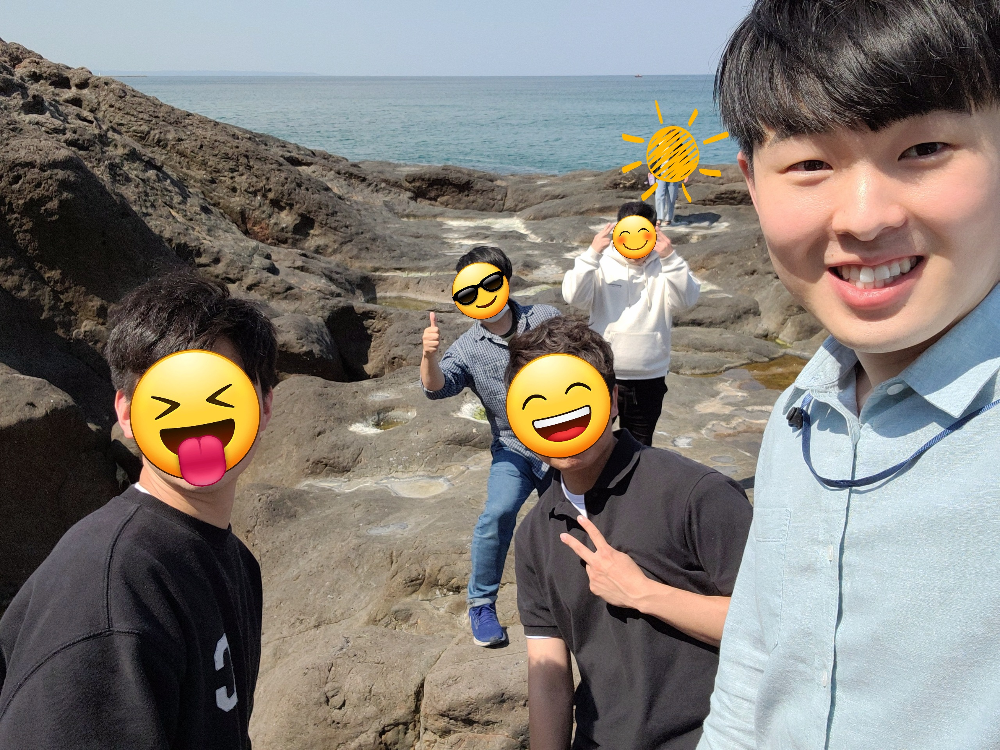

최근 근황
여름에는 얼마나 더울까.. 생각하게 되는 따스한 5월입니다. 이미 여름인가 싶다가도 시원한 바람을 느낄 수 있는 요즘인데 밤에는 쌀쌀하기도 하니, 감기 조심하시고 건강하시기 바랍니다.
저는 포항 비전선교단 공동체에서 지내며, 한동대 학생들 위주로 섬기며 지내고 있습니다. 또한 학부시절에 출석했던 교회에서 섬김의 자리를 주셔서, 부족하지만 감사함으로 배워가고 있습니다. 많은 학생들을 만나고 교제하곤하는데, 바쁜시간을 보내게 되는 학생들이 주님과의 관계를 놓치고 주어진 과제와 관계가운데 힘들어하는 모습을 종종 보게되어 안타까운 마음입니다. 하나님을 위해서 어떻게 살아야겠다는 마음들은, 바쁜 현실 속에서 너무나 쉽게 사라지는 것 같습니다. 그렇기에 하나님과의 관계를 다시 세우도록 우선순위를 정하자는 말들을 참 많이 하게 됩니다. 섬기는 학생들이 바쁜 상황속에서도 함께하시고 그들에게 모든 상황을 통해서 말씀하시는 주님으로 인해 힘을 얻고, 주님을 위해 살아가는 제자가 되기를 기도해주세요.

<제자양육 같은 페어와 함께>
많은 것을 배워가는 요즘인데, 특히 한동대 친구들을(비전선교단 동아리원, 매주 제자양육 진행) 위해 제자양육 준비를 하며 오히려 제가 더 주님을 알아가며 배우고 있습니다.
말씀 준비를 하며 나만 은혜를 받으면 어떡하지 싶기도 하지만 마음 밭이 좋은 친구들을 붙여주시고 신실한 은혜를 주셔서 각 사람 가운데 말씀하시는 주님을 경험할 수 있는 특권을 누리고 있는 것 같습니다. 참 감사한 시간입니다. 그러나 한편으로는 걱정되는 마음도 있습니다. 저의 마음은 주님의 은혜를 너무나 잘 잊어버리기에, 주님보다 다른 것을 의지하고자 하는 마음이 있음을 보게됩니다. 상황이 좋아지고 마음에 여유가 생기면 어김없이 주님이 아닌 다른 것을 바라보고 있습니다. 이런 상황에서 최근 제자양육 준비를 하며 묵상한 말씀이 있습니다. 예수님의 제자들이 풍랑가운데 고생하고 있을때 물 위를 걸어오신 주님을 보고, 물위를 걸어서 예수님께로 간 베드로에 대한 말씀입니다(마14:22-33).
마14:29-31
29 오라 하시니 베드로가 배에서 내려 물 위로 걸어서 예수께로 가되
30 바람을 보고 무서워 빠져 가는지라 소리 질러 이르되 주여 나를 구원하소서 하니
31 예수께서 즉시 손을 내밀어 그를 붙잡으시며 이르시되 믿음이 작은 자여 왜 의심하였느냐 하시고
묵상하며 베드로는 물위를 잘 걷다가 왜 빠지게 되었을지 생각해 보게되었습니다. 본문에는 명확하게 나옵니다. "바람을 보고 무서워 빠져 가는지라" 베드로는 바람을 무서워 했습니다. 물 위를 걷고자 믿음으로 나아가고, 물위를 걷게 되었던 베드로지만 바람을 무서워합니다. 주님이 계신 그곳으로 가는 것을 막는 방해물이 바람인 것이죠.
바람은 어부였던 베드로에게 있어서 극복할 수 없었던 한계처럼 느껴졌을 것 같습니다. 과거부터 물고기를 잡아야 했던 베드로이기에, 바람은 그가 하루를 어떻게 살아가야 할지 정해주던 극복할 수 없는 기준이였습니다. 바람이 많이 부는 날은 물고기를 잡을 수 없고, 혹여나 무리하다가는 죽음의 그늘을 경험했을 것이기 때문입니다. 바람 앞에서 아무것도 못하는 현실을 경험했기에, 바람은 베드로에게 있어 과거의 실패감이자 자신의 삶을 정해주는 척도였습니다. 그런 바람앞에서 베드로는 주님을 향한 믿음이 사라져서 무서워 빠지게 됩니다. 예수님이 아닌 바람을 "보게" 된 것이죠. 바람을 본다는 표현이 어색할지 모르겠으나, 베드로에게 바람은 단순히 느껴지는 촉감이 아니라, 과거부터 지금까지 그의 하루 삶을 결정했던, 경험에서 나오던 기준점인 것이죠. 그렇기에 주님이 자신의 삶을 인도해주시고 능력과 사랑으로 함께하심에도, 베드로는 무의식적으로 주님이 아니라 자기 삶의 기준점이였던 바람을 먼저 "보게" 됩니다.
저도 베드로와 같이 주님의 은혜를 경험했음에도, 여전히 나를 이끄는 것이 주님이 아니라, 나의 경험이나 지혜임을 보게됩니다. 주님을 의지하다가도 다시 내 기준점으로 돌아오곤 하는 것 같습니다. 이 기준이 과거부터 나에게 꽤 유효했기에, 어느새 주님이 아닌 그 기준을 보고 있습니다. 보는 것을 넘어서, 때로는 의지하는 것 같습니다. 하나님 앞에 기도함으로 매 순간을 나아가기 보다 내 경험과 지혜로 선택하려 합니다. 다른 것을 의지하는 마음으로 실수하고 넘어짐이 반복되는 것 같습니다. 이러한 연약함이 극복하기 어렵다고까지 느껴집니다.
그러나 본문에 주님은 믿음없는 베드로에게 "즉시" 손을 내밀어 붙잡아주십니다. 만일 제가 주님이라면, 큰 은혜를 주고 매 순간 인도함에도 못믿고 다른 것을 바라보는 베드로에게, 믿음없음의 대가가 어떤것인지 경험하라는 의도로 물에 빠지게 두고 물좀 먹이기도 했을 것 같습니다. 짠 물좀 먹고, 고생하면서 다른것을 의지하지 않도록 가르쳤을 것 같습니다. 그러나 주님은 베드로에게 즉시 손을 내밀어 잡아주십니다. 당신을 바라보지 않고 바람을 보았던 베드로를 구원해주시며, 안타까운 마음으로 "왜 의심하였느냐"고 말씀하십니다.
이게 우리를 향한 주님의 사랑의 마음인 것 같습니다. 믿음을 받으시고자 우리의 연약함을 추궁하시는 분이 아니라, 오랜시간 기다려주셔서 주님만이 우리가 유일하게 의지해야 할 선한 목자라는 것을 알려주십니다. 자발적으로 주님을 의지하고 사랑하기까지 주님은 기다리십니다. 즉시 잡아주실 만큼 가까이서, 사랑으로 함께하십니다. 제 삶을 보면 참 그랬던 것 같습니다. 믿음없는 수많은 순간들, 불평했던 순간들 가운데에서도 주님은 신실하게 은혜로 붙잡아 주셨습니다. 믿음 없으면 안되는 두려움이 동기가 아니라, 선하신 주님을 향한 사랑의 마음으로 나아가기를 기다리신 것 같습니다.
그러나 앞서 말했듯이, 여전히 저는 그 주님 보다 다른 것을 의지하는 마음이 남아있는 것 같습니다. 매일 가운데 주님보다 나를 의지하는 믿음 없는 모습이 보입니다. 하나님만 의지하는 선교사가 될 수 있을지 걱정되기도 합니다. 항상 해왔던 과거 방식이 아니라 주님께 나아가며 그 말씀에 순종하는 자가 되도록 기도해주세요. 정말 기도가 필요합니다. 하나님을 따른다 하지만 다른 것을 의지하며 살아가는 안타까운 그리스도인이 아니라 하나님만 의지하는 제자로서, 선교사로서 세워지길 원합니다.
 <동아리원들 리트릿 후>
<동아리원들 리트릿 후>
 <비전선교단 선교축제 부스 운영하면서>
<비전선교단 선교축제 부스 운영하면서>
{kind=link}